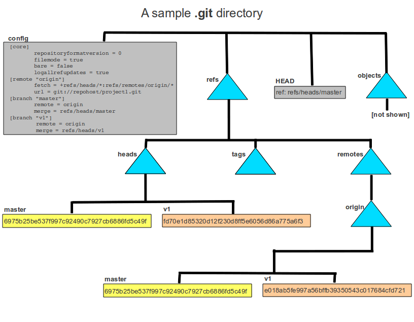

本文讲解了 .git 文件夹部分内容的作用。
本文不涉及 object 模型。我们会在另一篇文章再做分析。

| File/directory | Type | Meaning | Value |
|---|---|---|---|
| config | text file | The configuration file for the local git repository | [See diagram] |
| HEAD | text file | Lists a file to read that is the current HEAD branch: git branch will show the branch that HEAD refers to as the current branch. | ref: refs/heads/master |
| refs | directory | Everything under the refs directory is references to a commit for a branch of some type (either a local branch or a remote tracking branch). | - |
| refs/heads | directory | Files in the refs/heads directory are branch names. For example a file named refs/heads/master means a branch named master exists in the local repository. The contents of the file is the hash of the most recent commit on that branch. | - |
| refs/heads/master | text file | The most recent commit on this branch (master) | 6975b25be537f997c92490c7927cb6886fd5c49f |
| refs/heads/v1 | text file | The most recent commit on this branch (v1) | fd70e1d85320d12f230d8ff5e6056d86a775a6f3 |
| refs/remotes | directory | Everything under the refs/remotes directory is references to a commit for a remote-tracking branch. | – |
| refs/remotes/origin | directory | The remote tracking branches for the remote repository origin are stored in this directory. | – |
| refs/remotes/origin/v0 | text file | The most recent commit on this branch. Note the hash is the different than the hash in in refs/heads/v1 which means the user’s local v1 branch is behind the commit in the remote-tracking branch’s v1 branch. The user needs to merge the commits from this remote-tracking branch into the user’s v1 branch to catch up to the remote-tracking branch. | e018ab5fe997a56bffb39350543c017684cfd721 |
上表摘自 原文链接
另外补充一些
tree .git
1 | ├── HEAD |
| File/directory | Type | Meaning |
|---|---|---|
| object/info | 文件夹 | 记录了关于对象存储的附加信息 |
| index | 文件 | 保存暂存区（stage）信息 |
| description | 文件 | 仓库的描述信息 |
| hooks | 文件夹 | 存放一些 shell 脚本特定时间触发 |
| info | 文件夹 | 包含一些仓库信息 |
| logs | 文件夹 | 保存所有引用更改记录 |
| logs/HEAD | 文件 | 即 git reflog 结果 |
| logs/refs/stash | 文件 | 存储 git stash 暂存的记录 |
| logs/refs/heads | 文件夹 | 存储本地分支记录 |
| logs/refs/remotes | 文件夹 | 存储远程分支记录 |
| refs | 文件夹 | 上面已经提到，是当前的各种引用 |
| COMMIT_EDITMSG | 文件 | 最近一次提交的描述信息 |